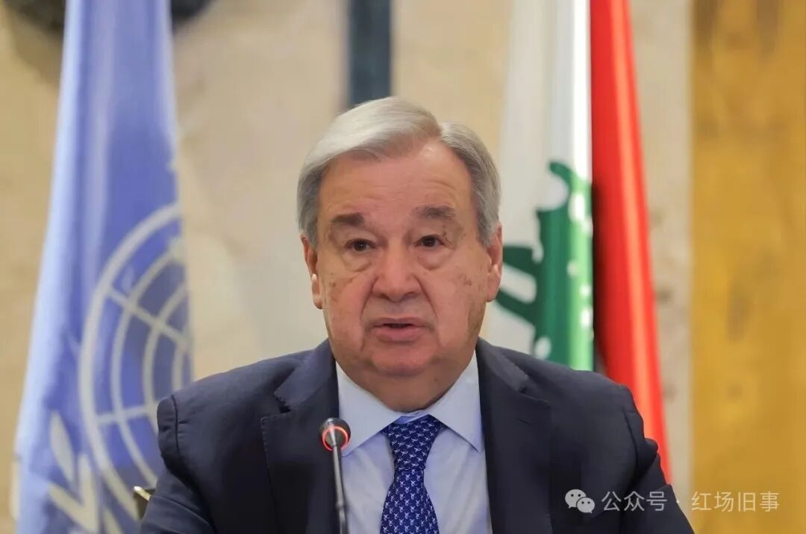
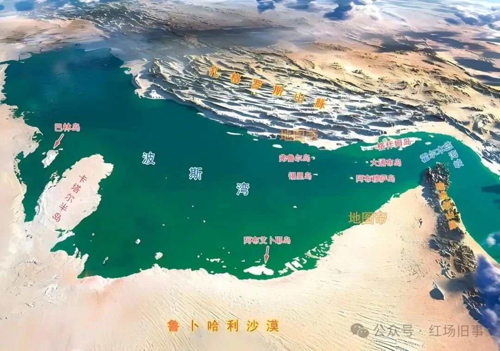
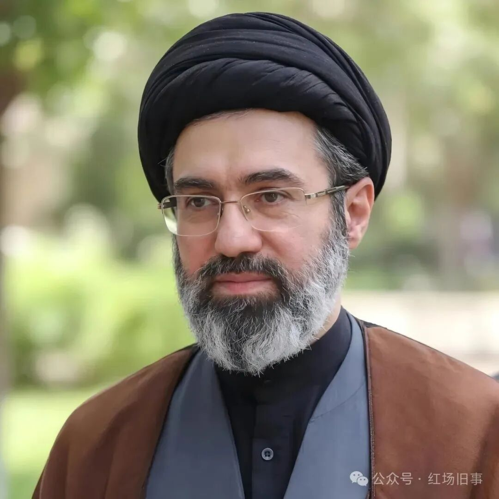

2026年2月28日清晨，德黑兰的爆炸声撕裂了持续数周的“谈判有望”假象。以色列国防部长卡茨宣布对伊朗发动“先发制人”打击，几乎同时，美国总统特朗普在社交媒体发布视频，称美国正在伊朗展开大规模军事行动，要把伊朗导弹工业“夷为平地”。“福特”号航母战斗群从阿拉伯海北部发射“战斧”巡航导弹；以色列战机从戈兰高地方向低空突防。德黑兰总统府附近区域腾起浓烟，纳坦兹核设施周边响起密集防空炮火。特朗普在演讲中直言目标：“确保伊朗永远不能拥有核武器”。并呼吁伊朗人“抓住扭转命运的机会”。
一、大国的站队与沉默
空袭发生后，联合国安理会召开紧急会议。秘书长古特雷斯谴责军事升级，称武力使用“损害国际和平与安全”。

俄罗斯外交部措辞严厉，谴责这是一起“事先策划的、武装侵略一个主权独立的联合国会员国的行为”，愿推动和平解决。但德黑兰很快意识到，莫斯科的“支持”止步于外交辞令，俄伊一周前刚在阿曼湾举行联合军演，但当导弹真的落下，俄罗斯并未启动任何军事响应机制。欧洲陷入分裂，英国允许美国使用其在塞浦路斯的军事基地进行“防御性打击”；法国、德国则呼吁外交解决，称事前“不知情、未参与”。西班牙、挪威公开质疑美以行动合法性，但在特朗普政府“非友即敌”的逻辑面前，欧洲的异议显得无力。沙特、阿联酋早在战前就明确拒绝成为美以攻击伊朗的中转站，不允使用其领空或领土。但当伊朗导弹反击落地，阿联酋棕榈岛遭袭、沙特利雅得响起爆炸声，海湾国家迅速关闭领空，与伊朗保持距离。
二、石油与航班的连锁震荡
霍尔木兹海峡的紧张骤然升温，这条承担全球约20%海运石油贸易的通道，在冲突后航运受阻，国际油价一度逼近120美元/桶，创2022年以来最高水平。迪拜机场数百架航班取消，多哈、利雅得大量航班改道，国际航空网络陷入瘫痪。

三、战局拉锯：谁先撑不住？以色列原计划第一阶段进行为期4天的密集打击，但伊朗的反击比预想中更快。伊导弹部队迅速回击，击中美军在中东的多个基地。伊朗议会官员警告：“你们开启这条道路，结局已不再由你们掌控。”从战场态势看，美以仍掌握空中优势，但伊朗依靠导弹、无人机、海上航运袭扰及地区代理力量维持反制，冲突逐渐由“速战速决”转向拉锯战。美军将空袭推进至伊朗原油出口枢纽哈尔克岛，该岛承担伊朗约90%的原油出口，但刻意避开石油装卸设施，体现“持续施压但避免触发全球能源危机”的边缘策略。
四、悬疑：战争的天平倾向哪边？
当美以联手“极限施压”，伊朗能撑多久？答案藏在三个变量里：第一，能源命脉。哈尔克岛若遭到实质性破坏，伊朗将失去核心财政来源，但全球油市也将面临新的供应冲击。双方都在试探红线。第二，消耗成本。前6天耗资已超百亿美元，美国日均作战成本接近9亿美元。特朗普本想速战速决为中期选举造势，如今伊朗议题已成政治“负资产”。第三，内部韧性。伊朗并非基于个人政治的国家，而是有着完整神权制度体系。穆杰塔巴·哈梅内伊被选为新任最高领袖后，战时权力中枢实现延续。

更大的问题是：当海湾国家纷纷关闭领空而非提供支援，当俄罗斯的“保护”止于口头谴责，德黑兰的“抵抗轴心”还剩多少实质支撑？2月28日那天的爆炸声，打开的或许是一个没有人知道底部在哪里的潘多拉魔盒。下期预告下一集《大结局：意识形态与国家利益：谁是中东的真正棋手？》，回顾46年历史：美苏（俄）如何在不同阶段扮演了“催化剂”角色。当两个文明古国都将对方的存在视为对本民族认同的根本否定，和平的希望在哪里？第11期 从CIA反苏负责人到克格勃顶级间谍：艾姆斯的双面人生第10期 25年潜伏，出卖1500名特工，让克格勃全球情报网瘫痪，CIA的“宝石间谍”
文字与图片版权归各自权利人所有；排版根据抓取内容整理。